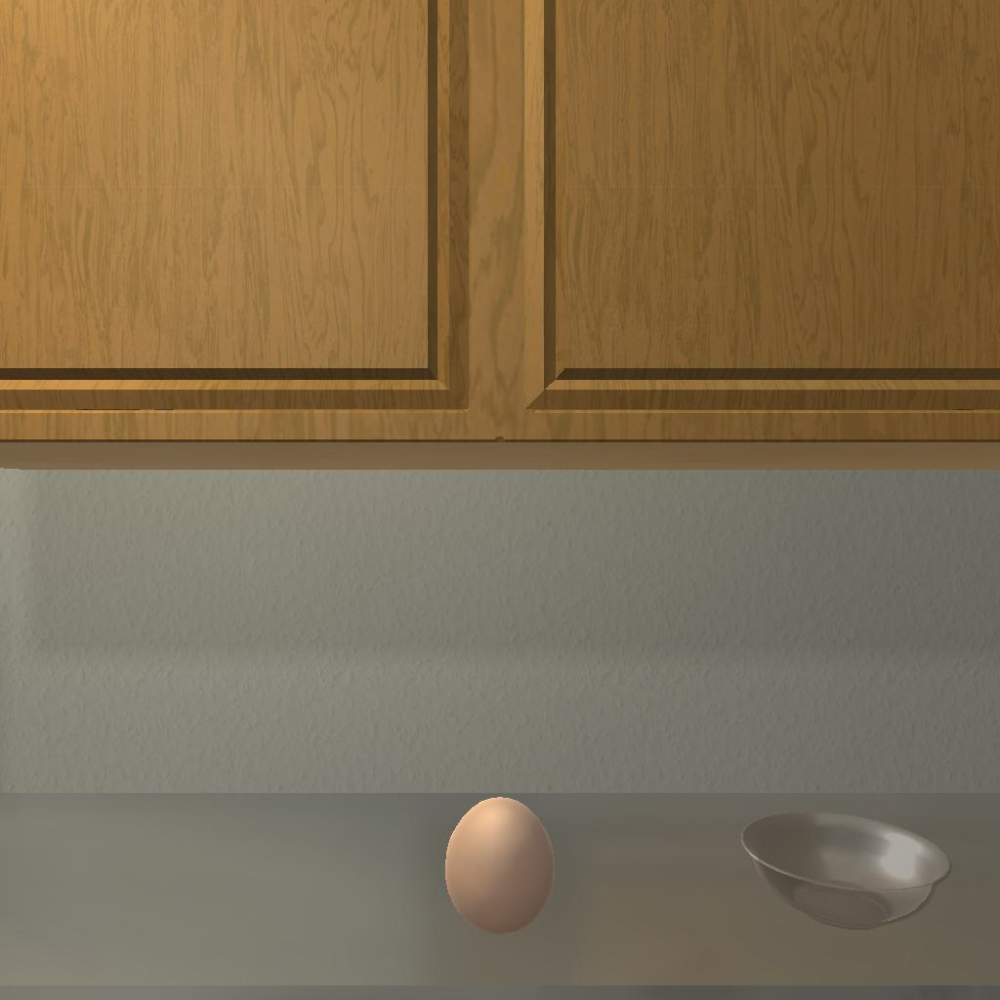

---------------------------------------------------------task: 22---------------------------------------------------------
--------------------------------------------------------------------------------------------------------------------------------------------------------------------
--------------------------------------------------------------------------------------------------------------------------------------------------------------------
Step:--------------------------------------------------------------------------13-------------------------------------------------------------------------------
----------------------------------------
VLM Prompt:
Image1:
Image2:
**Instruction**
1. Analyze the provided images to identify all visible household objects and compare the difference between images (e.h. whether the object is opened or not and taken on hand or not), focusing on those relevant to the task description "put a hot egg in countertop."
2. Use the analysis of images and the task hint "The agent must find an object of the desired type, pick it up, go to a microwave, heat the object with the microwave, then find the correct location to place it, and put it down there. The agent does not need to use the microwave button or open the microwave to heat the object, and the agent just needs to do action that is "heat the object with the microwave"." to answer the question: what is the most reasonable action in the choices for the task description "put a hot egg in countertop"?
3. Decide and write the answer using the template: The answer is: (i): , where i is the real number. If there is no desired object in images, search every place based on **Initial Observation** to find the object. And if no one is exactly correct, choose a similar answer.
**Initial Observation**
You are in the middle of a room. Looking quickly around you, you can see cabinet (1-18), countertop (1-4), sink (1), drawer (1-7), sinkbasin (1), coffeemachine (1), microwave (1), garbagecan (1), stoveburner (1-4), toaster (1), fridge (1)
**Answer Choices**
(1): go to cabinet 1
(2): go to cabinet 2
(3): go to countertop 1
(4): go to cabinet 3
(5): go to cabinet 4
(6): go to cabinet 5
(7): go to cabinet 6
(8): go to drawer 1
(9): go to drawer 2
(10): go to sinkbasin 1
(11): go to cabinet 7
(12): go to cabinet 8
(13): go to coffeemachine 1
(14): go to microwave 1
(15): go to cabinet 9
(16): go to cabinet 10
(17): go to drawer 3
(18): go to drawer 4
(19): go to garbagecan 1
(20): go to drawer 5
(21): go to cabinet 11
(22): go to cabinet 12
(23): go to cabinet 13
(24): go to cabinet 14
(25): go to stoveburner 1
(26): go to countertop 3
(27): go to stoveburner 2
(28): go to stoveburner 3
(29): go to stoveburner 4
(30): go to drawer 6
(31): go to cabinet 15
(32): go to cabinet 16
(33): go to cabinet 17
(34): go to cabinet 18
(35): go to toaster 1
(36): go to drawer 7
(37): go to countertop 4
(38): go to fridge 1
(39): put egg 1 in/on countertop 2
(40): examine egg 1
(41): examine countertop 2
**Answer**
Let's think step by step by following the instructions.
----------------------------------------
----------------------------------------
Original Response:
Image Analysis:
In Image 1, we can see a sink with a drying area on the left, a faucet, and various objects including a pot lid, a glass, a spoon, and an egg on the countertop.
In Image 2, we can see a different part of the kitchen with wooden cabinets above and an egg and a bowl on the countertop.
Comparing the images, the objects that are relevant to the task description "put a hot egg in countertop" are the egg and the bowl. The egg appears in both images, but its position changes. In Image 1, it is closer to the sink, while in Image 2, it is in the middle of the countertop. The bowl is only visible in Image 2.
Task Hint Analysis:
Based on the task hint, the agent needs to heat the egg with the microwave before placing it on the countertop. Since the images do not show a microwave, the agent needs to find the microwave first, heat the egg, and then place it on the countertop.
Using the Initial Observation and the task hint, the most reasonable action would be to go to the microwave first to heat the egg. After heating the egg, the agent can then place it on the countertop. Since there is no explicit action listed for heating the egg in the microwave, the closest action that aligns with the task description and the hint would be to go to the microwave.
The answer is: (14): go to microwave 1
----------------------------------------
----------------------------------------
>>> Refine Original VLM Response and Get Pure Action: go to microwave 1
----------------------------------------
-----------------------------------------------------------------
Running time: 35.76719403266907 seconds
Total Money: 11.333410000000002
-----------------------------------------------------------------
-----------------------------------------------------------------
Text Observation:You arrive at loc 14. The microwave 1 is closed.
-----------------------------------------------------------------
UNSUCCEED